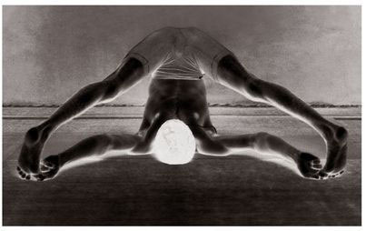

This asana has fifteen vinyasas. The 7th and 8th vinyasas constitute its states (see figures).
METHOD
After doing the first six vinyasas of the earlier asanas, come to the 7th vinyasa of Paschimattanasana, and doing puraka, join the feet, fold them open, press the heels to the sivani nadi [the nadi between the anus and the genitals], hold the feet open with both the hands, lift the chest, and sit with knees on the floor; this is the 7th vinyasa. Next, doing rechaka, fold forward, place the head on the floor, and do puraka and rechaka as much as possible; this is the 8th vinyasa. Then, follow the vinyasas of earlier asanas.
BENEFITS
While in the states of this asana, one should do rechaka and tighten the anus fully. By pulling the stomach in completely, holding the lower abdomen and anus tightly, and practicing rechaka and puraka, terrible afflictions related to the anus, such as constipation and piles, will be destroyed, and indigestion will no longer haunt an aspirant. Vamana speaks of Baddha Konasana as the greatest of the asanas, and says: “Baddhakonasane tishtan gudamakunchayet buddha gudarognivrittih syat satyam satyam bravimyaham [The wise one should retract the anus while in Baddha Konasana as it wards off anal disease, this I declare is true].” Many have had the experience of being relieved of bhagandara [fistula] and mulavyadhi [hemorrhoids] by this asana. Thus, through its practice, diseases related to the anus and the dhatu will definitely be cured.
In this context, a point must be made to readers and aspirants that they should be careful to remember. When one follows the methods of asana and pranayama, there is no doubt that all diseases will be cured. But if an aspirant thinks that this will occur by his merely practicing asanas while continuing to eat rajasic [stimulating] and tamasic [heavy] foods, then he is misguided. Such a course will actually lead to an increase in sickness.
For diseases related to the anus, sattvic and oily foods, such as milk, ghee, half-churned curds, are the best and, of the sattvic foods, only those that are thin (tanu) should be eaten. Thus, pure and pleasant foods should be consumed. By doing so, someone who is ill, but who practices asana and pranayama, will become strong in body, mind, sense organs, and intellect, and will be cured. The sick will become free of sickness and the weak will become strong, enabling them to practice subsequent inner steps, such as pratyahara [withdrawal of the senses]. However, one should not abandon the practice of yoga after becoming disappointed or indifferent because of an inability to follow the sattvic diet strictly. The practice of yoga should continue to be pursued while following a diet suited to one’s capacity. However, it is good to practice taking sattvic foods as much as possible.
SUPTA KONASANA
